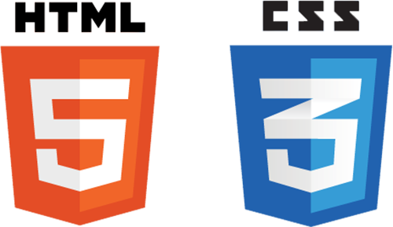

Skills
C# Programmer

Ability to program software using Microsoft's ASP.NET in C#. This includes both Windows Command Console and Windows Form GUI applications. Time spent programming in C#: 3 years
HTML, CSS, JS
Ability to create webpages using HTML 5, CSS 3, and Javascript. Time spent using HTML 5, CSS 3, and Javascript: 2 years
Access Database

Ability to create Databases, Queries, and Forms in Microsoft Access. This also includes being able to use Visual Basic for Access (VBA). Time spent using Access: 3 years
Current Events
Game Development
Currently developing a text based game called LOGIC: A Text Adventure. Work on this game was started in September of 2017 and is still ongoing. The game itself is text based, as the name implies, and thus, runs in the Windows Command Console. The game is being written in .NET Framework using C#. I tried .NET Core, but it's missing features.
Skills Canada Ontario
Was selected as one of the contestents to represent Conestoga College in the Skills Ontario 2018 Coding Competition.